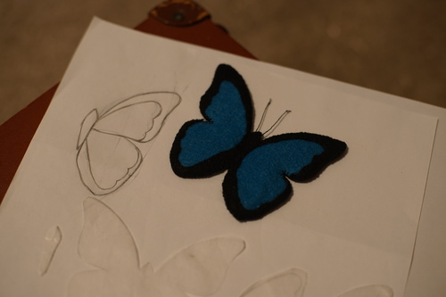
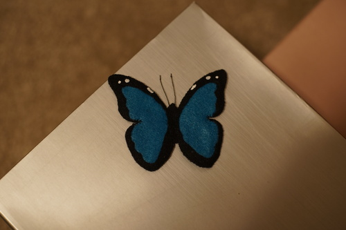
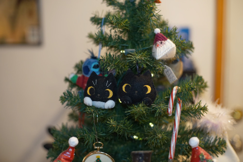
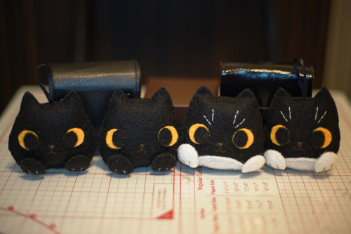
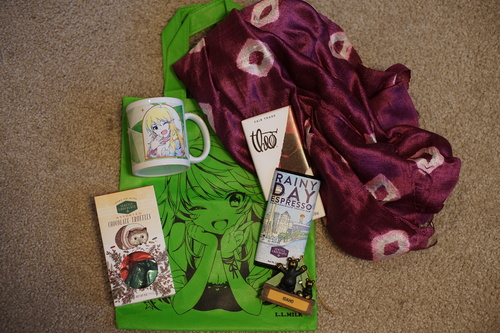
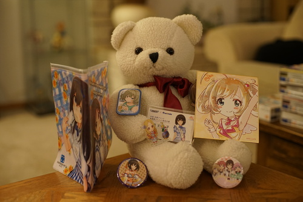
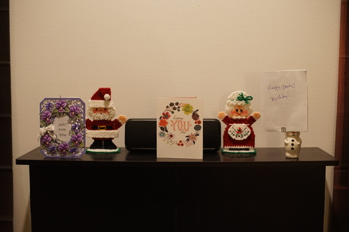
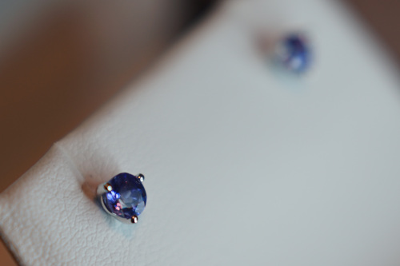

these two both had their birthdays today! verona is 12 now and kikipop is 6! i cant believe theyre so old now!! ;a; verona might be starting to develop a greeny haze, which is sad, but thats the nature of buying resin dolls. especially french resin dolls. i'll still love him even when he's green!!
iplehouse announced a very long time ago that they would replace any greened dolls for half of the original price. i dont think i would take them up on it, but i wonder if they'd even make a new louis since he's been discontinued for something like 10 years
ive been making so many felt guys... so many. i finished the second set of ryan's cats after ryan had me make a butterfly for peter.
i took some pictures of it next to the sketch before adding white with fabric paint. it was so hard to cut the felt that finely. felt is not a fine detail material!
im not sure the dots and line are even. i just eyeballed it...
 all four of the cats with the new ones on the outside. even though i made them from the same pattern they look different! I also didnt make bailey's eyes way too far apart this time...
i had a wonderful birthday!!! peter came over and we all had a great time or at least i had a great time! please check out my birthday haul!!!
peter bought me a mikimiki mug and bag!! he also found me this beautiful scarf. i can't tell what it's made of but the fiber is a little rough. its really interesting and a nice purple color. ryan got me some chocolates and a cute little bear ornament that says idaho. in this house we pretend to be from idaho!!!
the little hedgehog in a sweater is so cute!! i want a hedgehog in a sweater!!
ryan also got me pokemon shining pearl but it's not in the photo. i've already been playing it way before my birthday!! i dont have many complaints about this game. if i could change anything, id give them mitten hands instead of finger hands but thats about it.
Peter got me a fumika x arisu pouch, kaede button, eggplant button and business card, hijiri acrylic figure, a blind bag (with sugar heart inside!!) and a yuru yuri pin. ryan got me this lovely bear with my birth year printed on his ribbon. we're twins!
my cards!! my mom made me a lovely violet card! theres no way she didnt spend too much on that die set for anyone but me!
my mom bought me these beautiful tanzanite earrings. i picked them out like 2 years ago and maybe she forgot to give them to me last year but its okay because i luckily got them this year. i picked them because they were beautiful but she only bought them because theyre my birthstone. if birthstones arent a scam idk what is.
speaking of scams, i booted up deresute because ryan told me there was a nina SSR. i have like 4 10 rolls ready because i hate that game and i never used them, so i rolled for beautiful nina and i got her in the first 10 roll! she will never be used but she will live in my account until they shut down the servers. i quit that game years ago because of how frustrated i was that i coudlnt manage to roll a nina. its only $750 to spark one!
I saw a user on DoA selling their DOD BES body, saying they were going to get their boy a smaller body. I freaked out and messaged her asking if she actually found a resin match. She said she hadn't, but was going to send off a piece of him to have a company color match his head to their body. I don't know if I want to do that, since I would be terrified to lose any piece of him and also I don't generally like the bodies of the companies who are willing to resin match. I did find a google sheet of companies that will do custom colors! I'll have to look into them all some more. Maybe one has a decent body. I have no idea what DOD was thinking when they put that head on such a huge body. They're idiots and I'm an idiot for buying him!